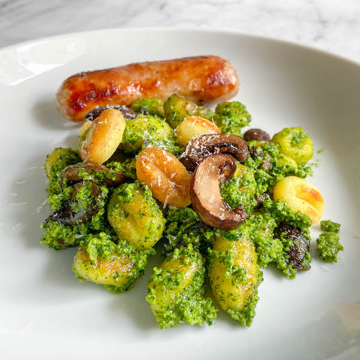

Roasted Gnocchi & Mushrooms with Pesto

Description
A simple and delicious fall meal with sausage, potato dumplings, fresh herbs, and beloved mushrooms... what's not to love?
Ingredients
16 oz gnocchi
1/2 cup olive oil + 3 TBSP
1.5 tsp salt
8 oz baby bella or mushroom of your choice
12 oz italian sausage (about 3 links)
1 cup walnuts
3 cloves garlic
1 cup kale
1 cup parsely
1/2 cup parmesan
Steps
- Preheat the oven to 425 F (220 C) and line a large baking sheet and a small baking sheet with aluminum foil, parchment paper, or silicone.
- In a large mixing bowl, add the gnocchi, 2 TBSP of olive oil, and 1/2 tsp of salt. Toss or stir until the gnocchi are well coated and spread them on the large baking sheet. In the same bowl, add the mushrooms and the remaining 1 TBSP olive oil and 1/2 tsp salt. Stir until coated well and add to the baking sheet. Arrange everything in a single layer, and don't worry about things touching!
- Arrange the sausages on the small baking sheet so they are not touching. I prefer to cook these on a separate pan so the juices don't make the mushrooms and gnocchi soggy.
- Bake everything for 25-30 min, stirring the gnocchi and mushrooms every 10 minutes. Don't worry about turning the sausages! When the sausages are done, they will be golden brown and no longer pink on the inside.
- While everything roasts, make the pesto. Add the walnuts and garlic cloves to the food processor and pulse until finely chopped. Scrape down the sides. Add the kale, parsley, and salt and run the processor until finely chopped. Leave the processor running as you slowly drizzle in the olive oil. When it's smooth, stop and scrape down the sides. Run for another 30 seconds. Stir in the cheese.
- In a large mixing bowl, combine the roasted gnocchi, mushrooms, and 2/3 of the pesto. Stir until everything is well coated. The remaining pesto will keep in the fridge for up to a week, or in the freezer for 6 months.
- Assemble! Divide the pesto gnocchi between three meal prep containers then add a sausage to each container. Let cool fully before covering. That's it!